rAIght.move
Lepsza technika, mniej kontuzji, większe mięśnie, czyli Twój asystent treningowy
Zespół:
Karol Kunicki
Hubert Rudzik
Michał Sadłek
Krzysztof Warchoł
Opiekunowie projektu:
mgr inż. Przemysław Dolata
dr hab. inż. Maciej Zięba
Motywacja
Empatyzja - najważniejsze wnioski:
- Coraz gorsza fizyczność ludzi
- Coraz większa świadomość ludzi na temat potrzeby poprawnej techniki ćwiczeń
(amatorzy, zawodowcy)
- Ludzie mogą nauczyć się poprawnej techniki przy pomocy trenera, filmików,
książek
- Nie za każdym treningiem można sobie pozwolić na trenera (pieniądze, czas)
- Aby sprawdzić własną technikę trzeba mieć wiedzę
- Sędziowie na zawodach mają często mało czasu na ocenienie poprawności
techniki (gimnastyka, aerobik sportowy, taniec)

Cel projektu
Celem projektu było opracowanie aplikacji, która w łatwy i przystępny sposób umożliwi użytkownikom ocenę poprawności wykonywanych ćwiczeń fizycznych.
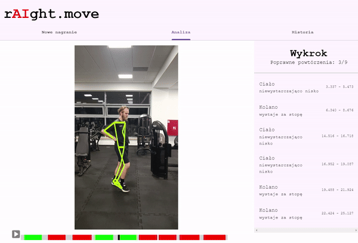
Potok przetwarzania
Potok przetwarzania zakłada jako wejście nagranie wideo zawierające kilka powtórzeń wybranego ćwiczenia, z którego uzyskiwana jest reprezentacja szkieletu. Następnie, na podstawie tej reprezentacji, dokonywana jest segmentacja na poszczególne powtórzenia, tak aby każdy segment mógł być analizowany osobno. Jeśli któreś z powtórzeń odbiega od wyznaczonej referencji, zwrócona zostanie informacja o wystąpieniu błędu.
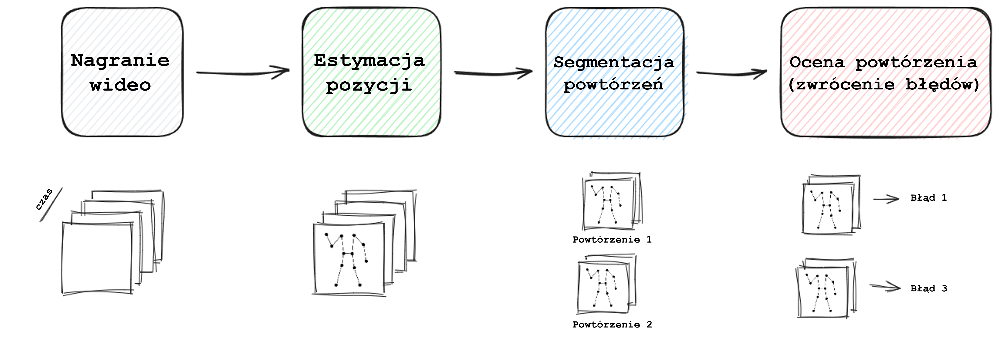
Metodyka
Podział na powtórzenia wykorzystuje wcześniej obliczone kąty pomiędzy najważniejszymi stawami. Każde ćwiczenie ma zdefiniowany zestaw kątów, których średnia wyznacza sygnał ćwiczenia, np. dla przysiadu będą to kąty lewego i prawego kolana z perspektywy bocznej (płaszczyzna XZ).
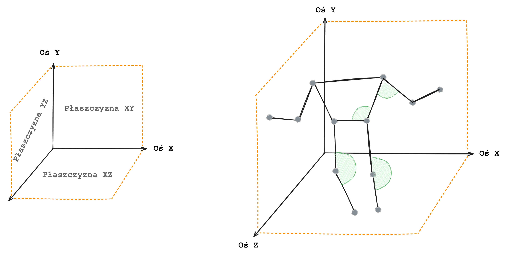
Taki sygnał posiada powtarzającą się strukturę, z której wyznaczane są wierzchołki, wymagane do określenia początku i końca każdego powtórzenia.
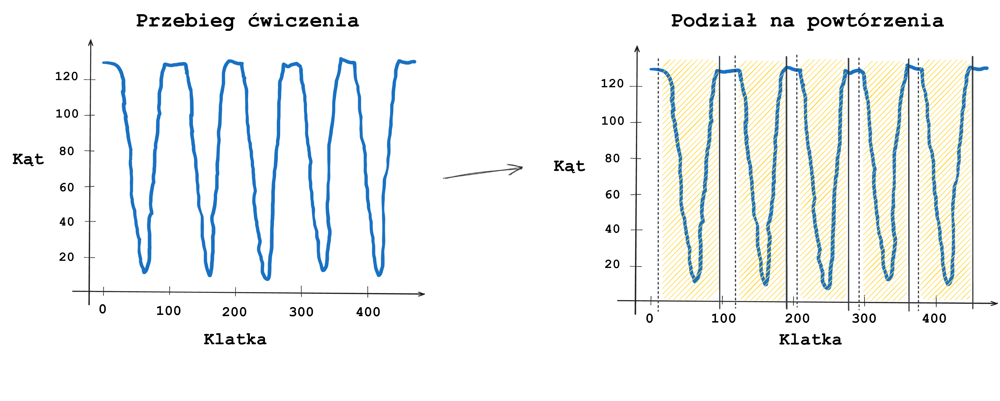
Aby ocenić jakość wykonanego powtórzenia, wykorzystaliśmy przebieg referencyjny, czyli idealnie wykonane powtórzenie. Każde ćwiczenie posiada zdefiniowane kąty, w których zachodzi największa wariancja. Przebieg zmiany dla tych kątów definiuje jakość wykonanego powtórzenia.
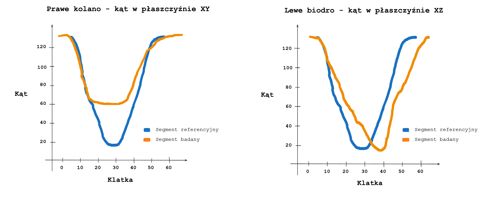
Jeśli różnica w kącie, który definiuje błąd, pomiędzy referencją a danym powtórzeniem, będzie większa niż wyznaczony próg, zostanie zwrócony błąd.
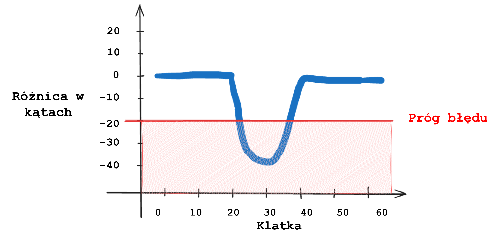
Porównywanie dwóch segmentów bazuje na algorytmie Dynamic Time Warping (DTW). Algorytm ten umożliwia dopasowanie indeksów dwóch serii czasowych, dzięki czemu mogą być porównywane jedynie wartości odpowiadające tym samym fazom ćwiczenia. Dzięki temu podejściu uzyskujemy informacje o różnicach w przebiegach pomiędzy seriami oraz o czasie, w którym te różnice wystąpiły.
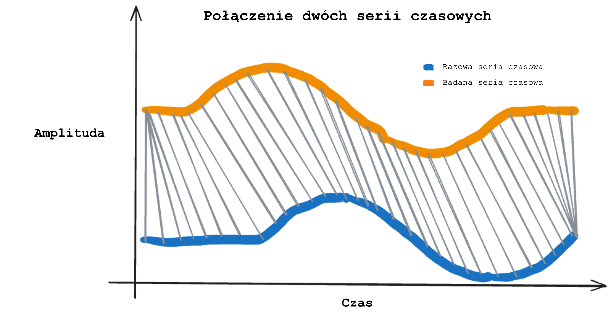
Zbiory danych
- Exercise Corection in 3D (EC3D), zbiór zawierający pozy 3D osób wykonujących ćwiczenia.
- rAIgt.move dataset (RMD), zbiór przygotowany przez nasz zespół składający się z nagrań wideo zawierających ćwiczenia z określoną liczbą powtórzeń. Wzorowany na EC3D (rodzaje ćwiczeń oraz etykiety błędów). Powstanie naszego zestawu danych umożliwiło przetestowanie algorytmu segmentacji powtórzeń oraz przeprowadzenie testu zwracanych błędów przez aplikację.

Zbiór RMD

Anotacja powtórzeń - RepLabelApp
W ramach pracy nad przygotowaniem zbioru RMD, powstało proste narzędzie RepLabelApp, które umożliwiło szybką anotację powtórzeń wybranego ćwiczenia.

Wyniki
Przygotowując aplikację, przetestowaliśmy na zbiorze RMD skuteczność naszego algorytmu segmentacji oraz algorytmu wykrywania błędów. Wyniki, które uzyskaliśmy to IoU równe 69,41% dla algorytmu segmentacji oraz dokładność równą 69,90% dla modułu wykrywania błędów. W pierwszym teście najlepsze rezultaty uzyskano na nagraniach zawierających powtórzenia przysiadu, w teście dotyczącym błędów - powtórzenia deski.
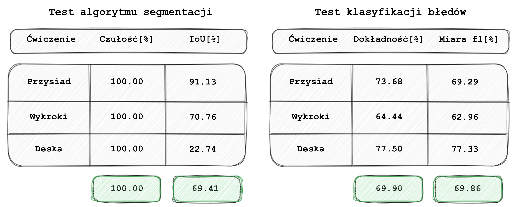
Aplikacja - rAIght.move
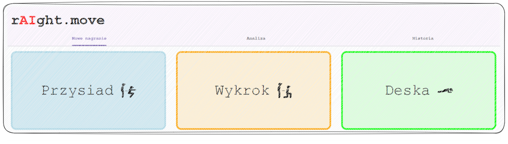
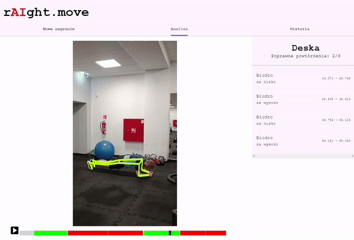
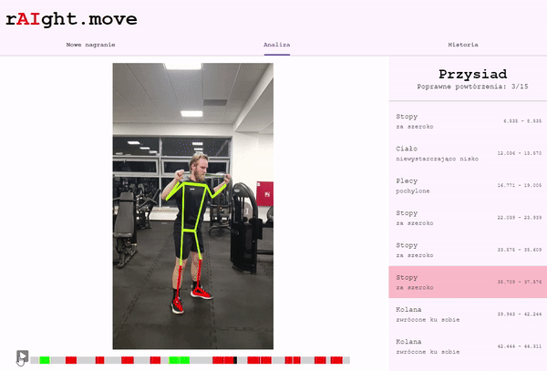